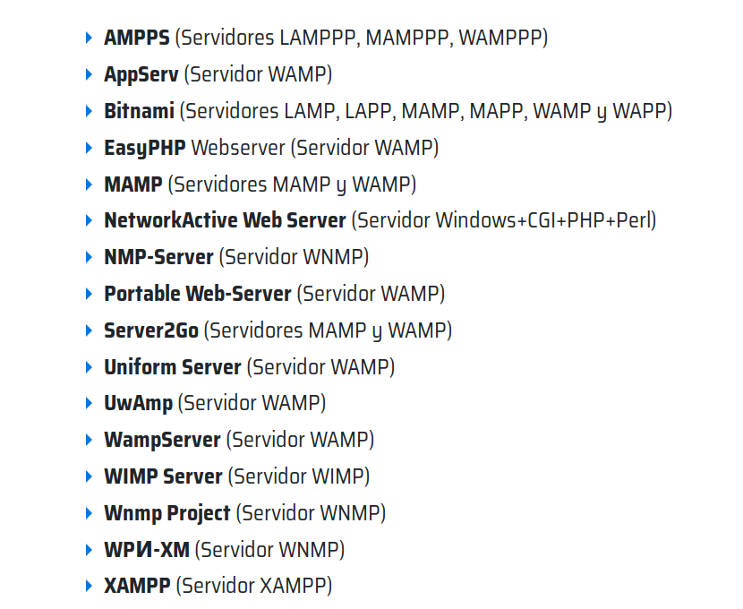

Un «Servidor Web» puede ser tanto un Ordenador (hardware) que presta funcionalidades de alojamiento y funcionamiento a páginas o servicios de Internet, como un Programa o Conjunto de programas (Software) que hacen posible que dichas páginas o servicios de Internet existan y funcionen.
A nivel de Software, para lograr la implementación de un «Servidor Web», hoy en día, existen muchas soluciones exitosas de software libre y código abierto disponibles, como alternativas a las soluciones comerciales, privativas y cerradas de las grandes empresas de categoría mundial.
En lo individual, un programa de «Servidor Web» gestiona el «Protocolo de Transferencia de Hipertextos (Hypertext Transfer Protocol o HTTP)», para hacer posible que los archivos que forman una página web esté disponible (en línea) para los usuarios, mediante un navegador web.
En lo grupal, un «Servidor Web» también puede verse o definirse como un conjunto de programas relacionados con conexiones a internet o una intranet, abarcando para ello desde la gestión de los correos electrónicos, la descarga de archivos, la navegación de sitios web, y/o las simples o complejas consulta de informaciones alojadas en bases de datos (BD) dentro de sí mismas o conectadas a él.
Servidores para Sistema operativo Windows según el lenguaje de programación
Ejecutar BÁSICO Un todo-en-uno servidor de aplicaciones de secuencias de comandos BASIC, puede gestionar automáticamente la sesión y el estado
do
LwanOcupa poco espacio, el servidor web altamente escalable.
RomPager AE Diseñado para la IO y sistemas embebidos, altamente escalable servidor Web integrado.
Enduro / XA plataforma de middleware para el procesamiento de transacción distribuida, basado en normas XATMI y Xa, de código abierto, API C
C ++
Tuxedo Basado en el estándar ATMI, es uno de los servidores de aplicaciones originales.
Tntnet Incluye un motor de plantillas, que permite la incrustación de código C ++ en las páginas HTML. Las plantillas se compilan antes de tiempo de ejecución, y por lo tanto muy rápido. Multi-roscado, apoya duración del objeto a través de variables de ámbito.
CPPSERV C ++ servlet contenedor.
En peso Un juego de herramientas web similar a Q t permitiendo el desarrollo web GUI aplicación similar con una función de Ajax habilidades.
POCO bibliotecas de C ++Un conjunto de bibliotecas de clases de código abierto, incluyendo Poco.Net.HTTPServer.html
CppCMS
uWSGI
Enduro / XA plataforma de middleware para el procesamiento de transacción distribuida, basado en normas XATMI y Xa, de código abierto
Enduro / X ASGServidor de aplicaciones para Go . Esto proporciona instalaciones XATMI y XA para Golang. Ir aplicación puede ser construido por archivos ejecutables normales Go, que a su vez proporciona servicios sin estado, que puede equilibrar la carga, agrupado y vuelve a cargar en vuelan a cabo la interrupción del servicio por medio del único trabajo administrativo. Marco proporciona distribuye instalación de procesamiento de transacciones para Go.
Haskell
Java
JavaScript
Broadvision Del lado del servidor JavaScript AS. Uno de los primeros participantes en el mercado durante el comercio electrónico burbuja de Internet , que tienen paquetes de soluciones verticales que abastecen a la industria del comercio electrónico.
Wakanda Servidor Del lado del servidor JavaScript servidor de aplicaciones que integra un motor de base de datos NoSQL (WakandaDB), un servidor HTTP, el usuario y la gestión de grupos dedicados y una del lado del cliente opcional JavaScript marco.
Node.js implementa motor V8 de Google como un independiente (fuera del navegador) asíncrono intérprete de Javascript. Una comunidad de desarrolladores de código abierto vigorosa en GitHub ha implementado muchos productos de apoyo, en particular NPM para la gestión de paquetes y capas de servidor App Connect y Express.
Pasajero phusion
Jsishun motor de JavaScript con el tipo de comprobación de modelo de Tcl .
Servidores web...
Apache:Este es el más común y más utilizado en todo el mundo. Además, es gratuito (cómo no), y de código abierto, así que podríamos decir que corre sobre cualquier plataforma.
Microsoft IIS: Sólo funciona sobre sistemas Windows, como ya habréis imaginado.
Si quieres empalarlo sobre otro sistema, tendrás que utilizar una máquina virtual.
Sun Java System Web Server: Este producto pertenece a la casa Sun, y suele empalarse sobre entorno de este sistema.
Ngnix:Este es un servidor Web muy ligero y corre sobre sistemas Unix y Windows.
Se ha convertido en el 4º servidor HTTP más popular de la red y también se distribuye bajo licencia BSD.
Lighttp:Este servidor Web es otro de los más ligeros que hay en el mercado. Está especialmente pensado para hacer cargas pesadas sin perder balance, utilizando poca RAM y poca de CPU. Algunas páginas populares que lo usan son Youtube, Wikipedia y otras que soportan gran tráfico diariamente. También es gratuito y se distribuye bajo licencia BSD.
TAMBIEN....
Un Servidor Web básico suele estar integrado por 3 tipos fundamentales de programas que son:
Servidor Web
Base de Datos
Lenguaje de Programación, Scripting y Marcado
SERVIDORES WEB
Principales libres
Apache
NGINX
Principales privativos, cerrados y comerciales
Cloudflare Server
LiteSpeed
Microsoft IIS
Otras opciones libres, abiertas, privativas y cerradas
Apache Tomcat
Apache Traffic Server
Google Servers
IBM Servers
Lighttpd
Node.js
Oracle Servers
Tengine
BASE DE DATOS
Principales libres, abiertos y gratuitos
Postgresql
Mysql (Community)
MariaDB
Principales privativas, cerradas y comerciales
Oracle
IBM DB2
Microsoft SQL Server
Teradata
SAP Sybase
Mark Logic Server
Pivotal GemFire
Oracle NoSQL
Microsoft Azure Table Storage
Amazon Redshift
AllegroGraphNeo4j
Infinite Graph
Cortex DB
Amazon SimpleDB
Otras opciones libres, abiertas, privativas y cerradas
Mongo DB
Couchbase Server
Elastic Search
RavenDB
Apache Jena
Apache Geode
Redis
Riak
Apache Cassandra
Apache Hbase
Neo4j
Foundation DB
Orient DB
LENGUAJES DE PROGRAMACION, SCROTING Y MARCADO
Principales libres, abiertos y gratuitos
PHP
PERL
Principales privativos, cerrados y comerciales
Java
Java
Swift
Otras opciones libres, abiertas, privativas y cerradas
Bash
C
C++
C#
Go
JavaScript
MATLAB
R
Ruby
Rust
Scala
Shell
TIPOS DE SERVIDORES WEB
Dependiendo de cómo se combinen los anteriores programas individuales dentro de un «Servidor Web» como una solución integral, los mismos suelen llamarse o clasificarse de la siguiente manera:
LAMP:Sistema Operativo Linux + Apache-MySQL-PHP
LAMPPP:Sistema Operativo Linux + Apache_MySQL/MongoDB_PHP/PERL/Python
LNMP:Sistema Operativo Windows + Nginx_MariaDB_PHP
LAPP:Sistema Operativo Linux + Apache_PostgreSQL_PHP
Los programas mencionados en la imagen inferior son algunos de los existentes tanto en el mundo del Software Libre y Abierto, como en el mundo del Software Privativo y Cerrado para la implementación integral de un Servidor web:

fig.1. Paquetes Libres y No Libres de Servidores Web